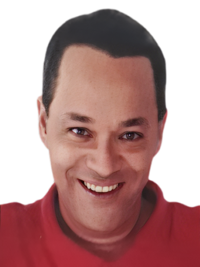

Luciano Francisco
Publicitário | Terapeuta Holístico | Sistemas | Escritor

Resumo
Adoro qualquer coisa que envolva criação de conteúdo, compartilhamento de ideias e conhecimento! E é justamente o que me motivou a atuar nas áreas como: Professor (educação), Terapeuta Holístico, Consultor, Palestrante, Sistemas de Informação, Projetos, Criador de conteúdo e a Trabalhar a descoberta da inteligência emocional nas pessoas.Desenvolvo neste atual cenário de forma online ações como: Consultas, Consultorias, Treinamentos, Desenvolvimento de projetos e conteúdo para diversas áreas de demandas personalizadas (internet, municípios, estados, países). Escrevi 4 livros, o mais recente é Energia - Todos dum d’eu num. Zero. Um, dois, três. Um. Passado, presente, futuro".
-
 (63) 98412-6242
(63) 98412-6242
-
 Rua Juarez Távora. Itabuna, Bahia, Brasil.
Rua Juarez Távora. Itabuna, Bahia, Brasil.
-
 professorluciano1@gmail.com
professorluciano1@gmail.com
-
 @lucianofranciscoi
@lucianofranciscoi
-
 LucianoFranciscoProfessor
LucianoFranciscoProfessor
-
 @lucianofranciscoi
@lucianofranciscoi
-
 @pprofluciano
@pprofluciano
-
 lucianofrancisco.siite.com.br
lucianofrancisco.siite.com.br
Formação
- 1994 a 1997 - Tecnico em Processamento de Dados
- 2004 a 2008 - Bacharel em Sistemas de Informção
- 2013 - Curso de Terapeuta em Terapias Holísticas
- 2013 - Curso de healing of the soul (Cura da Alma)
- 2014 - Curso de Barras de Access
- 2015 - Curso de Feng Shui
- 2015 - Curso de Hipnoterapia
- 2015 - Curso de Marketing Digital
- 2016 - Curso de Ho'ponopono
- 2016 - Curso de Numerologia (mapas)
- 2017 - Curso de Massagem Tantrica
- 2017 - Curso de Meditação
- 2018 - Curso de P.N.L
- 2018 - Curso de Reiki
- 2018 - Curso de Storytelling
- 2019 - Curso de Terapia Transpessual
- 2019 - Curso como escreve um livro
- 2020 - Curso de Estratégias de Inteligência Emocional para Alta Performance
- 2021 - Curso de Inteligencia Emocional 2.0
- 2022 - Curso de especialização nas áreas de: analise corporal, aromaterapia, cromoterapia, emagreciemnto, espiritualidade, filmoterapia, imposição de mãos, limpeza energética, musicoterapia, realacionamento, universalismo, videoterapia, reflexoterapia, proposito de vida.
Idiomas
-
 Inglês Inicial
(Básico)
Inglês Inicial
(Básico)
-
 Espanhol Inicial
Básico)
Espanhol Inicial
Básico)
Experiências
-
Diretório Municipal de Partido Político.
Função: Publicitário; Numerólogo; Terapeuta Transpessoal; ThetaHealing; Storytelling.
Período: Março de 2010 a Setembro de 2014. -
Secretaria Estadual de Cidadania e Justiça
Função: Gerente de Estado de Políticas e Proteção da Pessoa Idosa; Criador e Gestor de Projetos Sociais; Conselheiro no Conselho Estadual dos Direitos da Pessoa Idosa (orgão consultivo, normativo, deliberativo e formulador de políticas dirigidas à pessoa idosa).
Período: Março de 2015 a Setembro de 2016. -
Coliseo Eventos
Função: Massoterapeuta; Reikiano; Publicitário; Desenvolvedor de Site; Criador de Conteúdo; Divulgador; Social Média.
Período: Outubro de 2017 a Dezembro de 2019. -
Home Oficce | Terapeuta Holístico
Função: Costelador Familiar; Analista corporal; Filmoterapeuta; Musicoterapeuta; Espiritualista; Hipnoterapeuta. Aplicador das técnicas de: Ho'ponopono; P.N.L; Feng Shui; Inteligência Emocional; Barras de Access; Healing of the soul (Cura da Alma).
Período: Fevereiro de 2020 e até o momento atual (atendiemnto online).